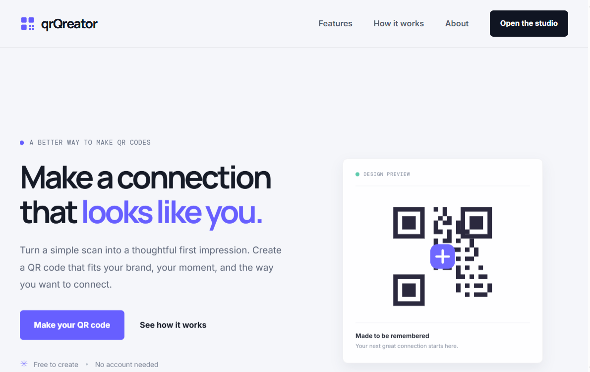
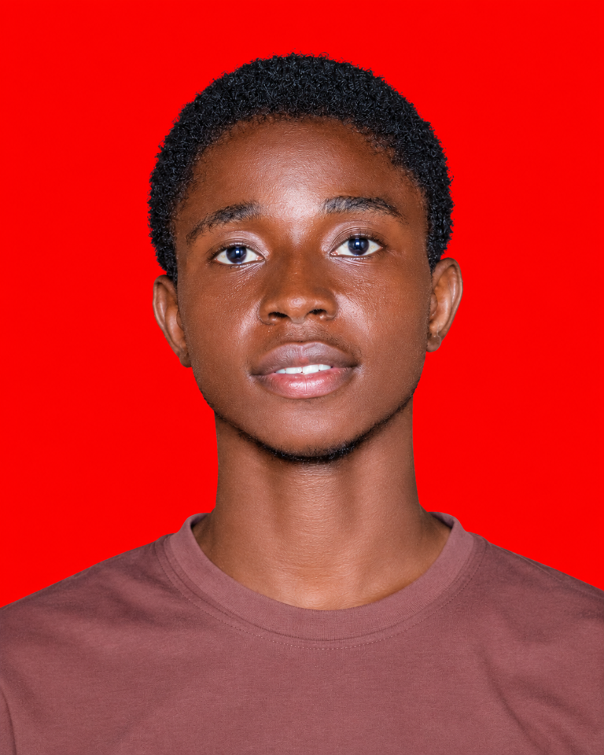

qrQreator
A browser-based QR code design studio for creating and customising codes without an account.
- HTML
- CSS
- JavaScript
Web Developer
I build functional, accessible and well-crafted websites that solve real problems.

Selected interface work, from completed applications to early concepts.

A browser-based QR code design studio for creating and customising codes without an account.
A landing-page concept exploring a more considered approach to city travel.
A responsive journal-site concept about rest and everyday rituals.
My development practice starts with HTML, CSS and JavaScript. I'm interested in making websites that are clear, accessible and useful, while continuing to explore Python and Flask.
More about my journeyHow meaningful elements make pages easier to understand, navigate and maintain.
Read articleA practical way to build layouts that adapt to their content and screen size.
Read articleHave a question or want to talk about a web project? I'd be glad to hear from you.